ХАСАН
СҰЛТАНҒАЛИЕВ
10.09.1925 — 03.09.2004 • Милиция полковнигі
«Ешкім де, ешқашан да ұмытылмайды!»
Хасан Сұлтанғалиев — Ұлы Отан соғысының отты майдандарын басынан өткерген жауынгер, Румыния, Польша, Германияны азат етуші майдангер гвардеец. Батыс Қазақстан облысы Тайпақ ауданының тумасы.
Соғыстан кейін 37 жылдан астам уақыт бойы Ішкі істер органдарында адал қызмет етіп, Теректі, Тайпақ, Чапаев аудандарында ел тыныштығын қорғаған өнегелі тұлға, КСРО ІІМ үздігі, құрметті милиция полковнигі.
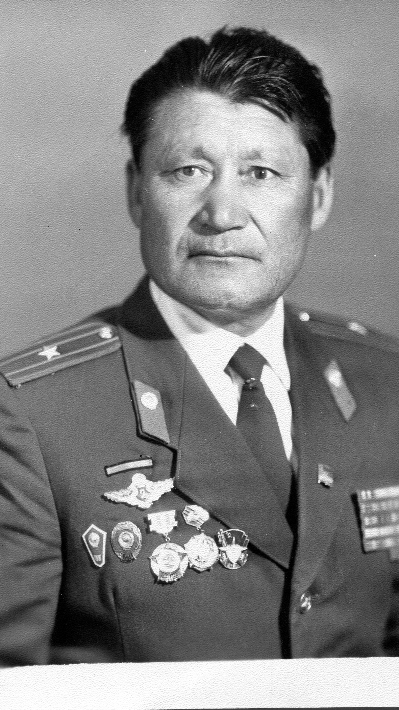
Милиция полковнигі
КСРО ІІМ үздігі • ҰОС гвардия сержанты
АРДАГЕРМЕН ТАНЫСУ • БЕЙНЕШОЛУ
Хасан Сұлтанғалиевтің тағылымды ғұмыры, соғыс жылдары мен ішкі істер саласындағы ерлік жолы туралы бейнежазба
Ардагерді таныстыру бейнефильмі
ЕРЛІК ПЕН ҚЫЗМЕТ ШЕЖІРЕСІ
Тайпақ ауданынан басталған майдан шебі, Еуропаны азат ету соғыстары және ел тыныштығын күзеткен 37 жылдық бейбіт еңбек
Өмірге келуі және балалық шағы
10 қыркүйекте Батыс Қазақстан облысы Тайпақ ауданының Есенсай ауылында дүниеге келген. Аталған ауданның Калмыков орта мектебінде 7 сыныпты тәмамдаған.
1 қаңтар — Майдан шебіне аттану
1943 жылы комсомол қатарына қабылданып, 1 қаңтарда Отан қорғауға аттанды. Чкалов облысының Колтубановка станциясында 63-запастағы атқыштар полкінде қатардағы қызыл әскер, кейін 365-атқыштар полкінде курсант болып білім алды.
Мотоциклді полк бөлімшесі командирі
Танкке қарсы атқыштар мотоциклді полк бөлімшесінің командирі ретінде шайқасқа түсті. 2-Украина, 3-Беларусь, 1-Прибалтика майдандарының алғы шебінде ұрысқа қатысты. 1944 жылы 27 маусымда майданда жарақат алды.
Гвардиялық Днестр мотоциклді полкі
2-Беларусь майданында, Брест қаласында, кейін А.Невский орденді Гвардиялық Қызыл Тулы Днестр мотоциклді полкінің 1-бөлімшесінің пулеметтік взвод командирі ретінде қызметін жалғастырды. Румыния, Польша, Германия жерлерін азат етуге қатысты.
Әскери қызмет & Әскери тілші
Лапичи және Бобруйск гарнизондарында байланыс бөлімшелеріне жетекшілік етті. Сонымен қатар «Защитник Родины», «Во славу Родине» әскери газеттерінің тілшісі болды. Майдан шебіндегі жауапкершілігі үшін И.Сталиннің қолы қойылған 17 алғыс хатын иеленді.
Ішкі Істер органдарындағы абыройлы қызмет
1951 жылдан бастап ІІО қызметіне қабылданып, 1952 жылы Сталинабад милиция мектебін, 1960 жылы Алматы арнайы милиция мектебін заңгер мамандығымен бітірді. Теректі, Тайпақ, Чапаев аудандарында үздік учаскелік инспектор қызметін абыроймен атқарып, «милиция полковнигі» шенімен құрметті демалысқа шықты.
ВИРТУАЛДЫ КӨРМЕ
Тарихи архивтік фотоқұжаттар, майдан анықтамалары, әскери жолдастарымен түскен суреттер мен мемлекеттік марапаттар залы (9 негізгі жәдігер)
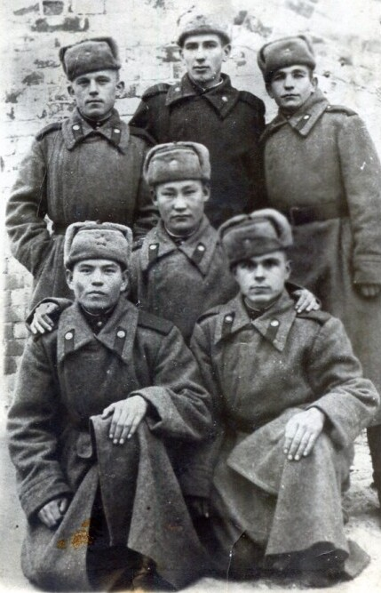
Майдандас жауынгер достарымен
365-атқыштар полкі мен танкке қарсы атқыштар мотоциклді полкі сапындағы алғы шеп сарбаздарымен бірге түскен тарихи фотосурет.
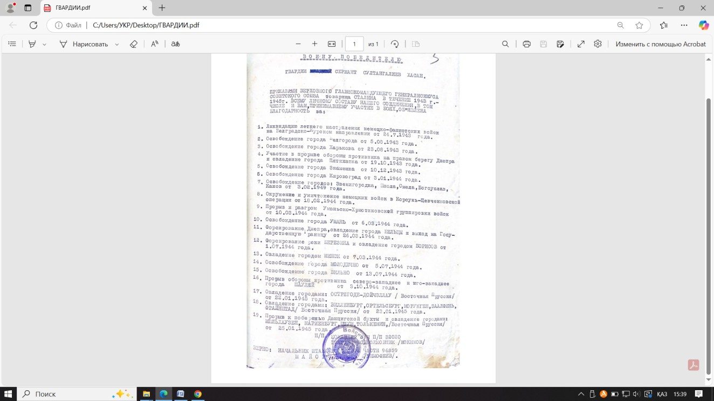
«Воину Победителю» алғыс хаты
Генералиссимус И.Сталиннің бұйрықтарымен жарияланған 17 тарихи жеңіс алғысының мөр басылған ресми құжаты.
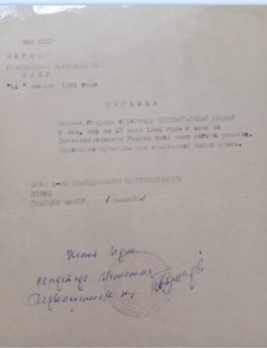
Әскери госпиталь анықтамасы
Гвардия ефрейторы Х.Сұлтанғалиевтің майдан шебіндегі ұрыста ерлікпен жараланғанын растайтын санитарлық анықтама.
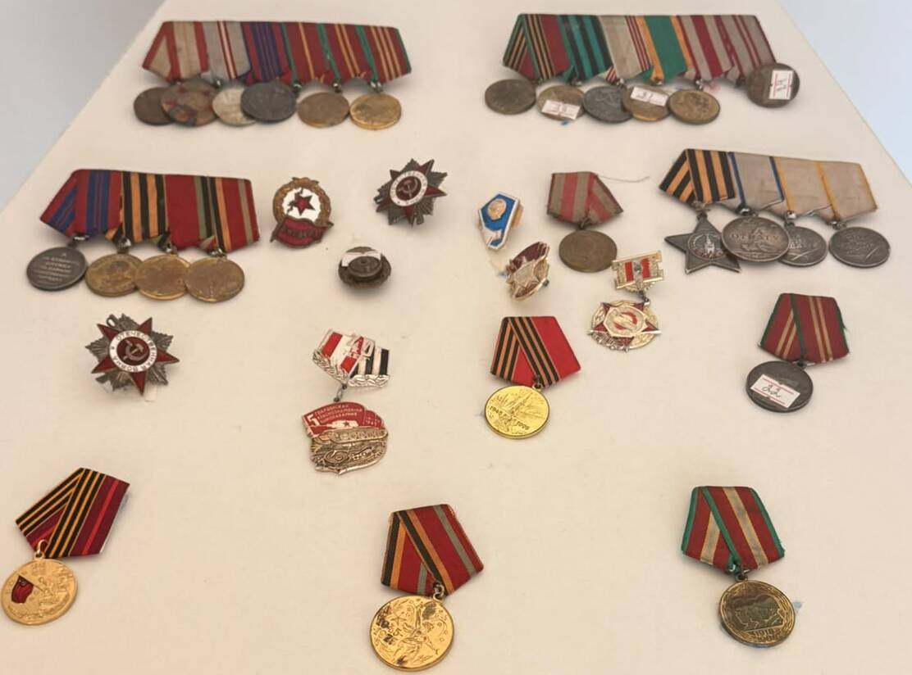
Жауынгерлік орден-медалдарымен
ІІІ дәрежелі Даңқ ордені, «За отвагу», «За боевые заслуги», «За взятие Кенигсберга» мемлекеттік наградаларымен.
Сталинабад милиция мектебі
Соғыстан елге оралған соң 1951 жылы Ішкі істер органдарына қабылданып, біліктілікті шыңдау жылдарындағы әріптестерімен.
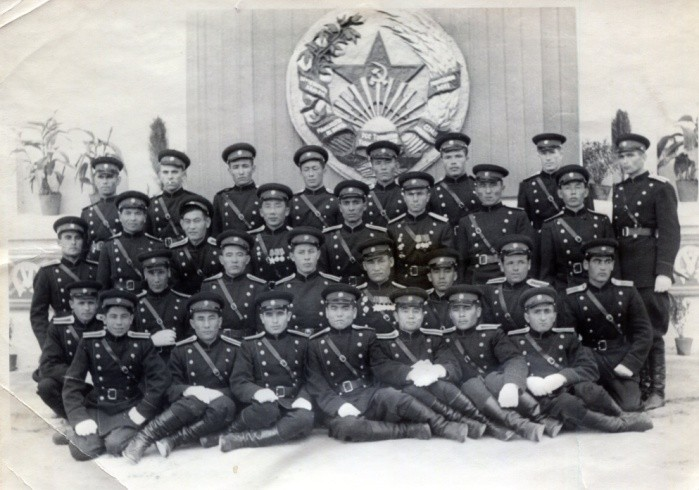
Халықпен етене қызмет
Теректі және Тайпақ аудандарында учаскелік инспектор болып жүрген шақтағы тұрғындармен жүздесу сәті.
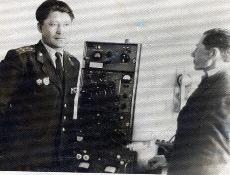
Жедел байланыс бұрышы
Майдан даласындағы байланыс бөлімшесін басқарған тәжірибесі ІІО саласында да аса пайдалы болды.
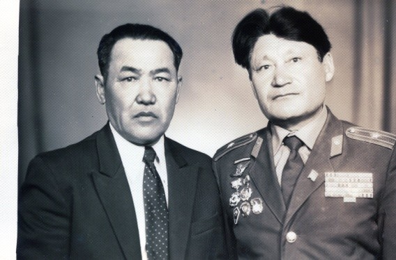
Милиция үздіктері слеті
Орал қаласында өткен облыстық милиция озаттары жиыны. КСРО ІІМ-нің үздік учаскелік инспекторы құрметі.
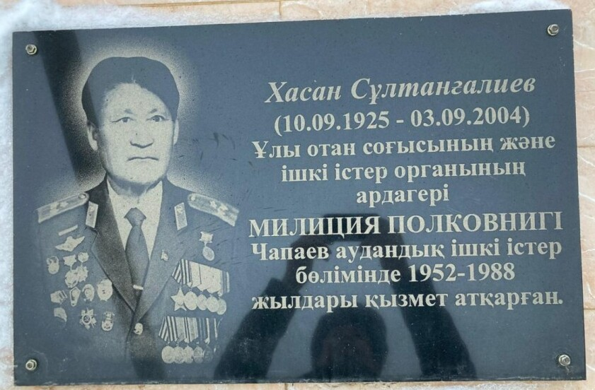
Мемориалдық ескерткіш тақта
Ардагердің 36 жылдық табанды еңбегін ұлықтаған Чапаев аудандық ІІБ ғимаратындағы қастерлі қара мәрмәр тақта.
МУЛЬТИМЕДИАЛЫҚ АРХИВ
Ардагер Хасан Сұлтанғалиевке арналған мұражайлық, деректі және замандастар сұхбатының бейнежазбалары
1-бейнежазба: Батыр музейімен таныстыру
Баяндаушы: Чункаев Калиулла Кубесович
Милиция майоры, ішкі істер органдарының ардагері Чункаев Калиулла Кубесович Майор в отставке, пенсионер, оның тарихи жәдігерлері мен ерлік шежіресін жан-жақты таныстырады.
2-бейнежазба: Архивтік материалдар
Баяндаушы: Кадыргалиева Алтын Амангельдиевна
Батыс Қазақстан облысы Полиция Департаменті музейінің меңгерушісі Кадыргалиева Алтын Амангельдиевна Хасан Сұлтанғалиевтің майдандық және қызметтік архив материалдарымен таныстыруда.
3-бейнежазба: Замандас сыры — Тарихи естеліктер мен сұхбат
Хасан Сұлтанғалиевпен өмірде етене араласқан қарулас замандасының сұхбаты
Хасан Сұлтанғалиевпен өмірде етене араласқан, қызметтес болған көзі тірі замандасы ардагердің азаматтық бейнесі, парасатты болмысы, ауыл тұрғындарының тыныштығын күзетудегі қажырлы еңбегі мен майдангерлік қайсар мінезі туралы шынайы сыр шертеді.
ҰРПАҚТАР САБАҚТАСТЫҒЫ
Өмірлік жары Ақырыспен бірге тәрбиелеген 8 перзенттің 5-еуі және 4 немересі әке жолын жалғастырды
Әке аманатына адалдық
Сұлтанғалиев Хасан ақсақал мен өмірлік жары Қадерова Ақырыс анамыз өсірген 8 баланың 5-еуі (соның ішінде 1 қызы) құқық қорғау саласын таңдап, халыққа адал қызмет етті. Бүгінде 4 немересі де ата жолын қуып, Ішкі істер органдарында абыройлы қызмет атқарып келеді.
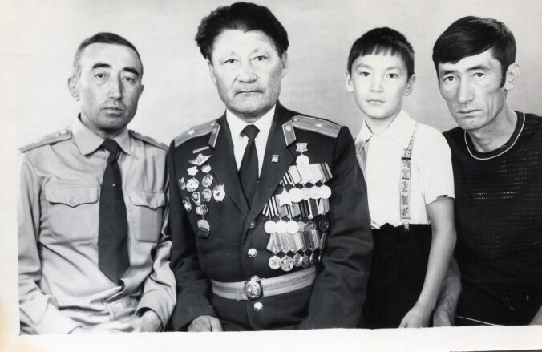
Хасан Сұлтанғалиев жұбайы Ақырыс Қадерова және офицер перзенттерімен бірге
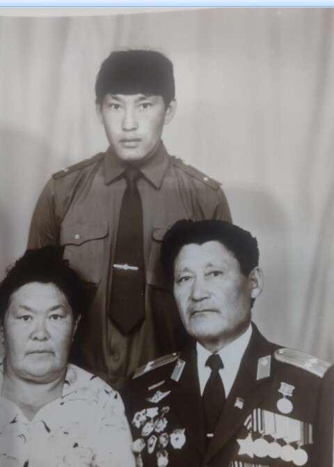
Әке жолын қуып, ел тыныштығын күзеткен ұрпақтары
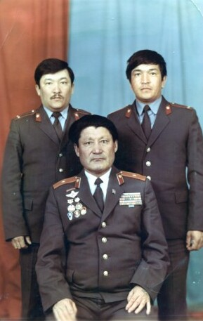
Ата дәстүрін жалғастырушы жас буын офицерлері